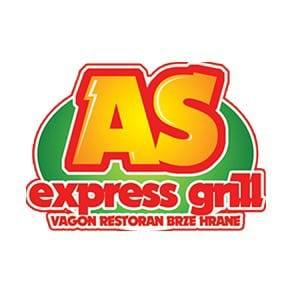

Restoran brze hrane Vagon AS nalazi se na železničkoj stanici u Smederevu, ispred glavnog ulaza u Smederevsku tvrđavu. U prijatnom ambijentu sa ukusnom hranom čeka vas pravo uživanje u svim čulima.
Vagon AS je restoran koji radi 24/7, uvek su tu za svoje mušterije i daju sve od sebe kako bi svako sa najvećim zadovoljstvom ponovo došao u restoran. Obične, gurmanske, punjene pljeskavice, punjeno belo meso kao najveći specijalitet, ćevapi, kobasice, raznovrsna pića i još mnogi specijaliteti. Uz svu tu harmoniju ukusa, divno je što je najveća znamenitost Smedereva: Smederevska tvrđava, na samo 50 metara od samog restorana gde možete prošetati i osetiti duh prošlog vremena.
Smederevska tvrđava je tvrđava u Smederevu koju je na ušću reke Jezave u Dunav u drugoj četvrtini 15. veka (od 1428. godine) podigao despot Srbije Đurađ Branković (1427—1456), po njoj nazvan Smederevac. Tvrđava je po svom tipu klasična vodena (opkoljena je Dunavom i Jezavom, a sa juga veštačkim šancem koji povezuje dve reke) ravničarsko utvrđenje što je čini jedinstvenom u srpskoj srednjovekovnoj arhitekturi, a za uzor prilikom gradnje uzet je Carigrad i njegovi bedemi.